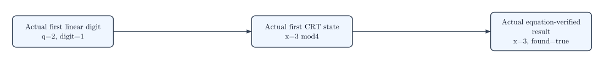
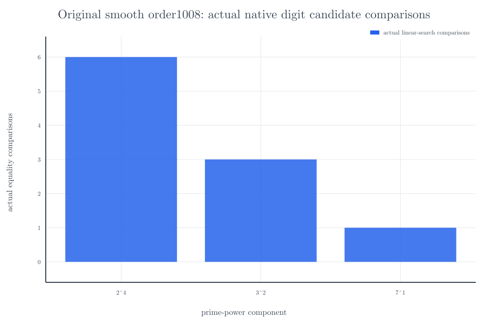
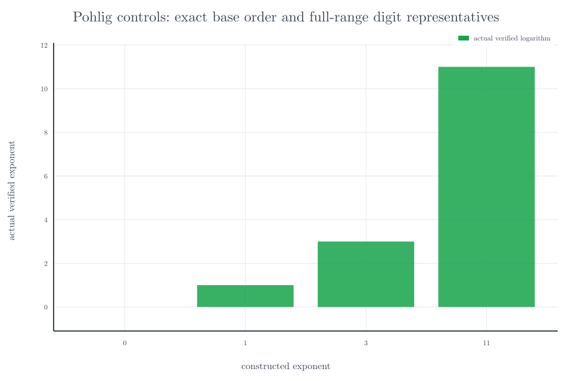
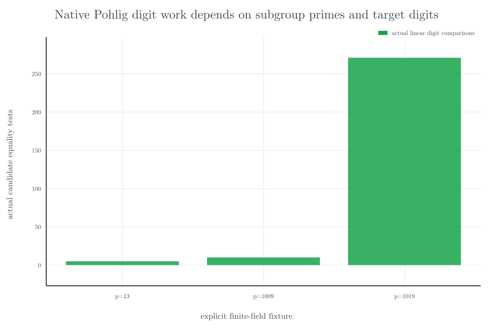

Pohlig–Hellman: actual linear digit searches and CRT
Abstract
Study the actual native producer from a tiny, inspectable example through the retained original experiment and explicit boundary/work controls. Complete editable C++ programs own every rendered native figure.
Mechanism and scope
The native producer trial-factors the exact base order, solves each base-q digit by a linear candidate scan, then merges the solved prime-power residues by CRT. Its digit search is O(q), rather than a square-root subgroup solver or a prebuilt lookup table. Trial factoring has its own cost and explicit selected-call policy. Finite-field membership and the exact base order are checked before digit solving. The original modulus1009, base11, order1008 and secret777 are retained; no external dataset is relevant.
A tiny actual producing history
The table reads actual producing records. The native diagram names actual captured values from that same run.
#include <dm/dm.hpp>
int main() {
std::filesystem::create_directories("build");
auto t = dm::algorithms::pohlig_hellman_trace(2, 8, 13, 12);
std::print("\n| subgroup prime | actual digit index | reduced target | actual picked digit | candidate " "tests | actual residue after |\n| ---: | ---: | ---: | ---: | ---: | ---: |\n");
for (auto &r : t.digits)
std::print("| {} | {} | {} | {} | {} | {} |\n", r.prime, r.index,
r.target, r.digit, r.candidate_tests, r.after);
std::print("\n| actual CRT factor | residue | previous value | previous modulus | value after | combined " "modulus |\n| ---: | ---: | ---: | ---: | ---: | ---: |\n");
for (auto &r : t.merges)
std::print("| {} | {} | {} | {} | {} | {} |\n", r.modulus, r.residue,
r.previous_value, r.previous_modulus, r.after,
r.combined_modulus);
dm::graphics::Diagram d;
d.node("n0", {0, 0},
std::format("Actual first linear digit\nq={}, digit={}",
t.digits[0].prime, t.digits[0].digit));
d.node("n1", {9, 0},
std::format("Actual first CRT state\nx={} mod{}", t.merges[0].after,
t.merges[0].combined_modulus));
d.node("n2", {18, 0},
std::format("Actual equation-verified result\nx={}, found={}",
t.run.exponent, t.run.found));
d.edge("n0", "n1").edge("n1", "n2");
d.save_svg("build/pohlig_hellman_tiny.svg");
}| subgroup prime | actual digit index | reduced target | actual picked digit | candidate tests | actual residue after |
|---|---|---|---|---|---|
| 2 | 0 | 12 | 1 | 2 | 1 |
| 2 | 1 | 12 | 1 | 2 | 3 |
| 3 | 0 | 1 | 0 | 1 | 0 |
| actual CRT factor | residue | previous value | previous modulus | value after | combined modulus |
|---|---|---|---|---|---|
| 4 | 3 | 0 | 1 | 3 | 4 |
| 3 | 0 | 3 | 4 | 3 | 12 |

The retained original experiment
#include <dm/dm.hpp>
int main() {
std::filesystem::create_directories("build");
const std::uint64_t prime =
1009, base =
11, order =
1008, secret =
777, target = dm::algorithms::mod_pow(base, secret, prime);
auto t = dm::algorithms::pohlig_hellman_trace(base, target, prime, order);
std::print("Original11^x={} modulo1009, exact order1008: actual returned exponent{}, found{}.\n",
target, t.run.exponent, t.run.found);
std::vector<double> tests, theory;
std::vector<std::string> labels;
std::print("\n| prime | digit | actual reduced target | picked digit | actual candidate comparisons | " "residue after |\n| ---: | ---: | ---: | ---: | ---: | ---: |\n");
for (auto &d : t.digits)
std::print("| {} | {} | {} | {} | {} | {} |\n", d.prime, d.index,
d.target, d.digit, d.candidate_tests, d.after);
for (const auto &f : t.factors) {
std::size_t count = 0;
for (auto &d : t.digits)
if (d.prime == f.prime)
count += d.candidate_tests;
tests.push_back(count);
theory.push_back(std::sqrt(static_cast<double>(f.power)));
labels.push_back(std::format("{}^{}", f.prime, f.exponent));
}
std::print("\n| factor | actual digit comparisons | original sqrt(q^e) reference |\n| --- | ---: | ---: " "|\n");
for (std::size_t i = 0; i < labels.size(); ++i)
std::print("| {} | {} | {} |\n", labels[i], tests[i], theory[i]);
std::print("Original whole-order square-root reference: {}. This is not a measured operation count.\n",
std::sqrt(static_cast<double>(order)));
auto p =
dm::graphics::RPlot::barplot(tests, labels,
"actual linear-search comparisons",
{37, 99, 235});
p.title("Original smooth order1008: actual native digit candidate comparisons").x_label("prime-power component").y_label("actual equality comparisons");
p.save_svg("build/pohlig_hellman_original.svg");
}Original11^x=990 modulo1009, exact order1008: actual returned exponent777, foundtrue.
| prime | digit | actual reduced target | picked digit | actual candidate comparisons | residue after |
|---|---|---|---|---|---|
| 2 | 0 | 1008 | 1 | 2 | 1 |
| 2 | 1 | 1 | 0 | 1 | 1 |
| 2 | 2 | 1 | 0 | 1 | 1 |
| 2 | 3 | 1008 | 1 | 2 | 9 |
| 3 | 0 | 1 | 0 | 1 | 0 |
| 3 | 1 | 374 | 1 | 2 | 3 |
| 7 | 0 | 1 | 0 | 1 | 0 |
| factor | actual digit comparisons | original sqrt(q^e) reference |
|---|---|---|
| 2^4 | 6 | 4 |
| 3^2 | 3 | 3 |
| 7^1 | 1 | 2.6457513110645907 |
Original whole-order square-root reference: 31.74901573277509. This is not a measured operation count.

Explicit controls
#include <dm/dm.hpp>
int main() {
std::filesystem::create_directories("build");
std::vector<double> values;
std::vector<std::string> labels;
std::print("\n| exact-order case | actual returned exponent | verified |\n| --- | ---: | --- |\n");
for (std::uint64_t secret : {0ULL, 1ULL, 3ULL, 11ULL}) {
const auto target = dm::algorithms::mod_pow(2, secret, 13);
auto r = dm::algorithms::pohlig_hellman_run(2, target, 13, 12);
labels.push_back(std::to_string(secret));
values.push_back(r.exponent);
std::print("| secret{} | {} | {} |\n", secret, r.exponent,
r.found &&
dm::algorithms::mod_pow(2,
static_cast<std::uint64_t>(r.exponent),
13) == target);
}
bool rejected = false;
try {
dm::algorithms::pohlig_hellman_run(4, 4, 13, 12);
} catch (const std::invalid_argument &) {
rejected = true;
}
std::print("Declared12 rejected for base4, whose exact order is6: {}.\n",
rejected);
auto p =
dm::graphics::RPlot::barplot(values, labels, "actual verified logarithm");
p.title("Pohlig controls: exact base order and full-range digit representatives").x_label("constructed exponent").y_label("actual verified exponent");
p.save_svg("build/pohlig_hellman_controls.svg");
}| exact-order case | actual returned exponent | verified |
|---|---|---|
| secret0 | 0 | true |
| secret1 | 1 | true |
| secret3 | 3 | true |
| secret11 | 11 | true |
Declared12 rejected for base4, whose exact order is6: true.

Actual selected work
#include <dm/dm.hpp>
int main() {
std::filesystem::create_directories("build");
struct Case {
std::uint64_t p, g, order, secret;
};
std::vector<double> v;
std::vector<std::string> labels;
std::print("\n| prime | exact order | target exponent | actual trial divisors | actual linear digit tests " "| actual external power calls |\n| ---: | ---: | ---: | ---: | ---: | ---: |\n");
for (auto c : std::vector<Case>{{13, 2, 12, 3}, {1009, 11, 1008, 777},
{1019, 2, 1018, 777}}) {
auto r =
dm::algorithms::pohlig_hellman_run(c.g,
dm::algorithms::mod_pow(c.g,
c.secret,
c.p),
c.p, c.order);
labels.push_back(std::format("p={}", c.p));
v.push_back(r.work.small_log_tests);
std::print("| {} | {} | {} | {} | {} | {} |\n", c.p, c.order, c.secret,
r.work.factor_trials, r.work.small_log_tests,
r.work.power_calls);
}
auto p =
dm::graphics::RPlot::barplot(v, labels,
"actual linear digit comparisons");
p.title("Native Pohlig digit work depends on subgroup primes and target digits").x_label("explicit finite-field fixture").y_label("actual candidate equality tests");
p.save_svg("build/pohlig_hellman_work.svg");
}| prime | exact order | target exponent | actual trial divisors | actual linear digit tests | actual external power calls |
|---|---|---|---|---|---|
| 13 | 12 | 3 | 1 | 5 | 15 |
| 1009 | 1008 | 777 | 2 | 10 | 26 |
| 1019 | 1018 | 777 | 21 | 271 | 13 |

API and interpretation
Every block is a complete editable C++ program. Reusable searches, walks, geometry decisions, fixture histories and algorithm work live in the canonical library. Captured records own their values and are not reconstructed by a second algorithm in the report. Explicit policies count the documented selected calls, records or scalar entries; they are not peak-byte or wall-clock budgets. Original reference curves are labelled as references, and finite returned results are not promoted into universal convergence, recovery, scaling or speed guarantees.
Python arbitrary-precision powers, inverse powers and CRT check actual reduced
targets, linear-search digits and merge states. Frozen primitive-base
comparisons preserve three hundred ordinary solutions. The shared batch passes83
native regression tests,18 directly instrumented sanitizer tests,84 compiled and
executed public examples,391/391 scoped documentation definitions, standalone
and installed header checks, a linked installed consumer and ten representative
symbol hovers. All four complete programs execute and their computed results and
local figures survive HTML and Markdown export. Build receipts:
build/mepml-conversion/batch-284-293/.